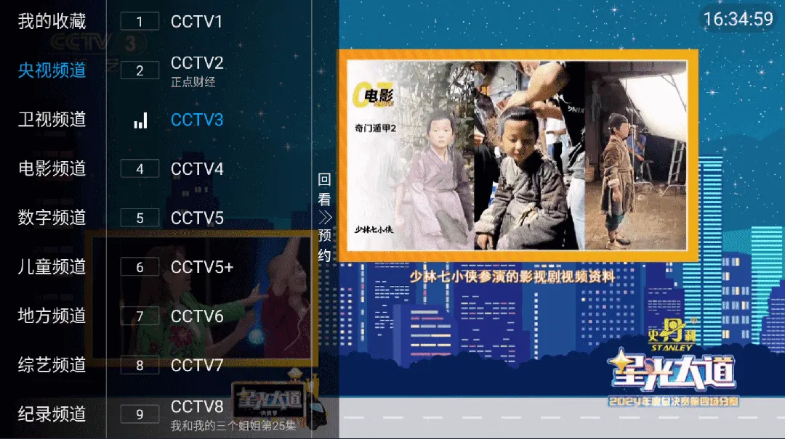

✯ 以下是来自原项目的推荐，如有疑问可直接联系原想项目作者＜（＾－＾）＞ ✯
✯ 这是一个国内可直连的iptv直播源分享项目 ✯
🔄永久免费 完全开源 不含广告 直播源支持IPv4/IPv6双栈访问🔄
请注意：本仓库直播源全部来源：由github仓库工作流自动收集于网络公开资源。本项目不存储任何直播源媒体的内容，所有直播源均由第三方提供，本项目不对其内容负责，不保证直播源的可用性、稳定性和合法性。
如不愿折腾开源项目，推荐直接下载第三方开发的软件 直播电视 APP 使用，手机电视盒子都兼容，免费无广告。
直播电视APP 下载地址：https://izbds.com/aztv/ 野草助手安装码：0024
📡 自动扫描直播源 IPTV4
IPTV4直播源由部署在服务器上的程序自动扫描验证，确保直播源的时效性和稳定性。
本次更新时间: 2026-06-15 12:38:39
| 名称 | 网址 | 快速复制 |
|---|---|---|
| TXT 格式直播源 | https://live.zbds.top/tv/iptv4.txt | |
| M3U 格式直播源（已带台标和EPG） | https://live.zbds.top/tv/iptv4.m3u |
如果你打不开github域名，请使用加速地址访问，加速地址也失效了？那就在找一个
https://gh-proxy.com/raw.githubusercontent.com/vbskycn/iptv/refs/heads/master/tv/iptv4.txt
https://gh-proxy.com/raw.githubusercontent.com/vbskycn/iptv/refs/heads/master/tv/iptv4.m3u
📡 自动扫描直播源 IPTV6
IPTV6直播源专为IPv6网络优化，由部署在服务器上的程序自动扫描验证，确保直播源的时效和稳定
本次更新时间: 2026-06-15 12:38:39
近期由于不可力抗原因，大部分ipv6源都关门了，大玩家各玩各的。造成网友们不能一网通吃，请大家静待花开吧！！如有开门的大玩家，本仓库第一时间更新上来给大家分享
| 名称 | 网址 | 快速复制 |
|---|---|---|
| TXT 格式直播源 | https://live.zbds.top/tv/iptv6.txt | |
| M3U 格式直播源（已带台标和EPG） | https://live.zbds.top/tv/iptv6.m3u |
有地方的宽带运营商已经污染本项目域名了，如果你打开失败，请使用加速地址访问
https://gh-proxy.com/raw.githubusercontent.com/vbskycn/iptv/refs/heads/master/tv/iptv6.txt
https://gh-proxy.com/raw.githubusercontent.com/vbskycn/iptv/refs/heads/master/tv/iptv6.m3u
💽DEMO

🛠️工具
我们提供多种直播源相关工具，帮助您更好地使用IPTV直播源：
直播源开源站点地址
💬 联系
📝 免责声明
-
本项目仅作为技术研究用途，用于学习和交流。所有内容均收集自互联网公开链接，严禁用于任何商业用途，包括但不限于商业直播、商业推广等。
-
本项目不存储任何的流媒体内容，所有直播源均由第三方提供，本项目不对其内容负责，不保证直播源的可用性、稳定性和合法性，所有的法律责任与后果应由使用者自行承担。
-
本项目采用开源协议发布，您可以 Fork 本项目，但引用本项目内容到其他仓库的情况，务必要遵守开源协议，必须注明来源。
-
本项目不保证直播频道的有效性，直播内容可能受直播服务提供商因素影响而失效。
-
本项目由社区维护，所有文件均托管在 GitHub仓库 且自动构建，由项目发起人公益维护，欢迎 Star 本项目或点击 Issues 反馈您的问题。
-
本项目维护者保留随时修改或终止项目的权利，且最终解释权归项目维护者所有。
-
使用本项目即表示您已阅读并同意本免责声明，如不同意本声明，请立即停止使用本项目，本项目保留随时更新免责声明的权利